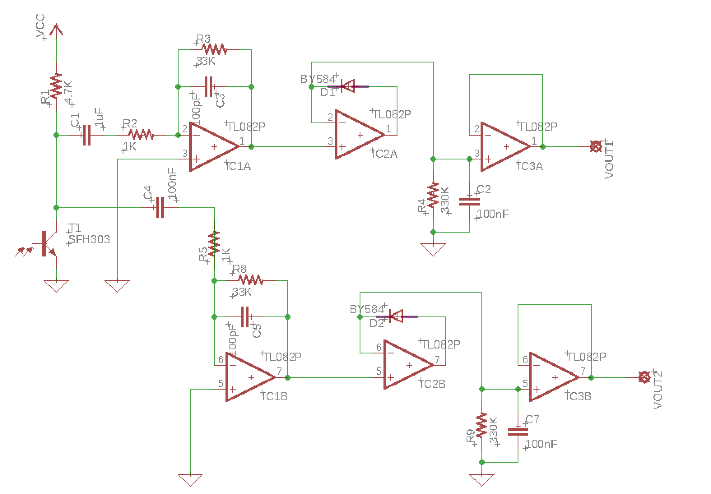
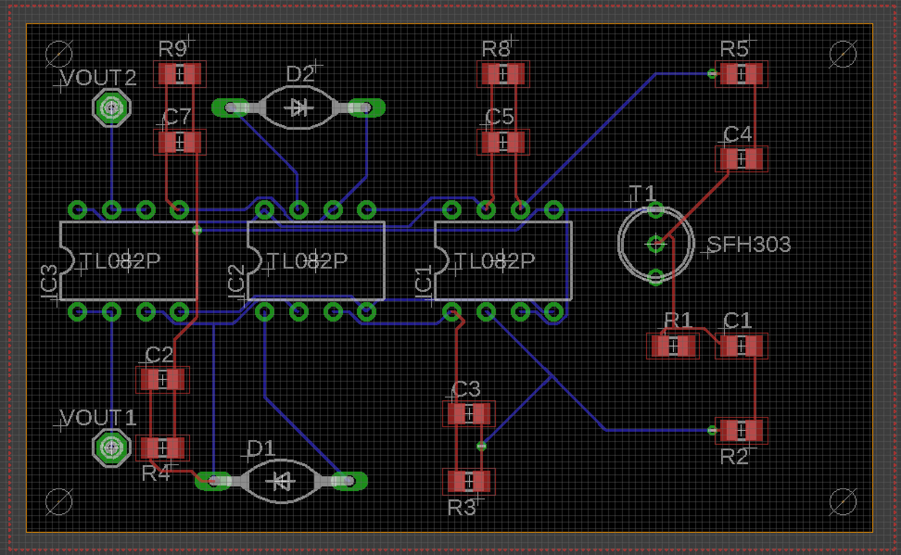

For context, visit Project-Robot.
The third obstacle in the Robot Competition Course was a timing-protected gate, indicated by an IR emittor facing the path. When a 10kHz signal was omitted, it was safe to pass through the gate. When a 1kHz was omitted, however, it was not safe. If a robot passed the gate when the 1kHz signal was on, a switch would trigger and the next platform would begin rotating. This made navigation extremely difficult; every robot team planned to only enter when it was safe.
The IR Sensor had to detect the IR signals while being resistant to slight changes in distance and angle, as our robot would end up in a slightly different position each time. I designed the circuit to detect both 1kHz and 10kHz to increase confidence as to which signal was being omitted.
Commercial off-the-shelf sensors were, of course, prohibited.
The signal was detected by a QSD124 phototransistor and was split into the 1kHz and 10kHz processing circuits.
The microcontroller had very low computing power, and would not be able to process the data quickly. Every second counted in this competition, as it was very difficult to complete the course in the alloted 2 minutes. The 10kHz 'go' signal was also only emitted for a few seconds; as the robot itself requires time to pass through the gate, we needed to detect the signal change immediately.
Additionally, if there were large DC offset, then processing in purely software would not be possible as the analog input port on the microcontroller would be saturated at 5V. So I implemented purely hardware processing.
The first op-amp in both circuits acts as an amplifying active band-pass filter. The series RC circuit acts as a high-pass filter, with low frequency signals getting blocked by the capacitor. The parallel RC circuit acts as a low-pass, with high frequency signals getting "shorted" to ground.
The second op-amp in both circuits acts as a precision rectifier, or super-diode. As the name implies, it allows for a higher precision of signal processing as it lacks the voltage drop of a normal, forward-biased diode. With regards to our circuit, it allows for a faster "charging" and slower "decay" of our DC output signal.
Because of the rectifier, we can attach a parallel RC circuit to allow for peak detection. The capacitor charges when the input wave is high. When the input wave is slow, the capcitor discharges slowly, due to the high impedance of the circuit. After several cycles the voltage on the capacitor closely reflects the peak of the input waveform.
The output from the peak detector circuit was connected straight into the analog input port on the microcontroller.
As it turned out, our course provided us with pre-lined PCBs for free, and we just had to layout our components on the board and solder them in. However, I'm still grateful for the EDA practice as I'm sure it will be useful for future design jobs where I will actually manufacture the PCBs.
Our IR circuit worked flawlessly before and throughout the competition, and we were one of the few groups to not have any issues regarding IR sensing.